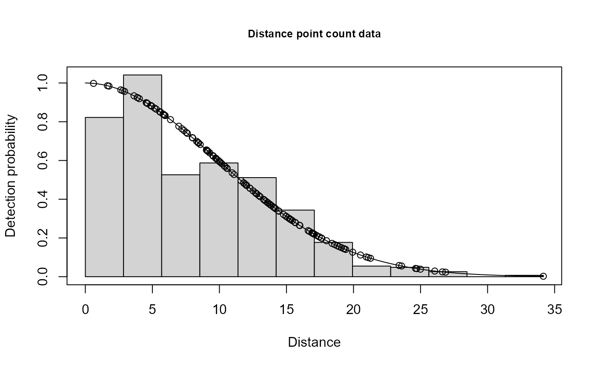

Single observer point count data example from Distance
Format
The format is 144 obs of 6 variables: distance: numeric distance from center observer: Factor w/ 2 levels "1","2": 1 2 1 2 1 2 1 2 1 2 ... detected: numeric 0/1 object: sequential object number Sample.Label: point label Region.Label: single region label
Examples
# \donttest{
data(ptdata.distance)
xx <- ddf(dsmodel = ~cds(key="hn", formula = ~1), data = ptdata.distance,
method = "ds", meta.data = list(point=TRUE))
#> Warning: no truncation distance specified; using largest observed distance
summary(xx)
#>
#> Summary for ds object
#> Number of observations : 144
#> Distance range : 0 - 34.16
#> AIC : 919.1403
#> Optimisation : mrds (nlminb)
#>
#> Detection function:
#> Half-normal key function
#>
#> Detection function parameters
#> Scale coefficient(s):
#> estimate se
#> (Intercept) 2.283007 0.04523359
#>
#> Estimate SE CV
#> Average p 0.1644301 0.01466592 0.08919244
#> N in covered region 875.7520203 102.72037375 0.11729390
#> EDR 13.8518741 0.61774122 0.04459622
plot(xx,main="Distance point count data")

ddf.gof(xx)
#>
#> Goodness of fit results for ddf object
#>
#> Chi-square tests
#> [0,2.85] (2.85,5.69] (5.69,8.54] (8.54,11.4] (11.4,14.2] (14.2,17.1]
#> Observed 5.000 19.000 16.000 25.000 28.000 23.000
#> Expected 5.955 16.432 23.166 25.232 23.213 18.671
#> Chisquare 0.153 0.401 2.217 0.002 0.987 1.004
#> (17.1,19.9] (19.9,22.8] (22.8,25.6] (25.6,28.5] (28.5,31.3]
#> Observed 14.000 5.000 5.000 3.000 0.000
#> Expected 13.356 8.578 4.978 2.620 1.254
#> Chisquare 0.031 1.493 0.000 0.055 1.254
#> (31.3,34.2] Total
#> Observed 1.000 144.000
#> Expected 0.547 144.000
#> Chisquare 0.375 7.973
#>
#> P = 0.6315 with 10 degrees of freedom
#>
#> Distance sampling Cramer-von Mises test (unweighted)
#> Test statistic = 0.0954697 p-value = 0.607543
Regions <- data.frame(Region.Label=1,Area=1)
Samples <- data.frame(Sample.Label=1:30,
Region.Label=rep(1,30),
Effort=rep(1,30))
print(dht(xx,sample.table=Samples,region.table=Regions))
#> Abundance and density estimates from distance sampling
#> Variance : P2, N/L
#>
#> Summary statistics
#>
#> Region Area CoveredArea Effort n k ER se.ER cv.ER
#> 1 1 1 109978.3 30 144 30 4.8 0.4245349 0.08844477
#>
#> Abundance:
#> Region Estimate se cv lcl ucl df
#> 1 Total 0.007962956 0.001000224 0.1256096 0.006212055 0.01020736 97.52316
#>
#> Density:
#> Region Estimate se cv lcl ucl df
#> 1 Total 0.007962956 0.001000224 0.1256096 0.006212055 0.01020736 97.52316
# }